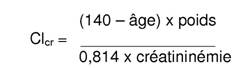
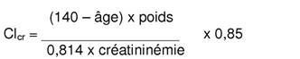

RÉSUMÉ DES CARACTÉRISTIQUES DU PRODUIT
ANSM - Mis à jour le : 09/01/2009
BUFLOMEDIL MYLAN 150 mg, comprimé pelliculé
2. COMPOSITION QUALITATIVE ET QUANTITATIVE
Chlorhydrate de buflomédil ............................................................................................................ 150,00 mg
Pour un comprimé pelliculé.
Comprimé pelliculé.
4.1. Indications thérapeutiques
Traitement symptomatique de la claudication intermittente des artériopathies chroniques oblitérantes des membres inférieurs (au stade 2).
4.2. Posologie et mode d'administration
|
En raison de la marge thérapeutique étroite du buflomédil, il est indispensable de mesurer la fonction rénale du patient et de respecter les posologies suivantes. |
Fonction rénale normale:
300 mg à 600 mg par jour en au moins 2 prises. La posologie maximale recommandée ne doit pas dépasser 600 mg par jour.
Insuffisance rénale légère à modérée (clairance de la créatinine comprise entre 30 et 80 ml/mn*):
La posologie maximale quotidienne doit être impérativement réduite de moitié, soit 1 comprimé à 150 mg matin et soir. Chez ces patients, la posologie maximale quotidienne ne doit pas dépasser 300 mg.
Mesure de la fonction rénale:
· mesure systématique de la créatinine sérique avant d'instaurer le traitement,
· calcul de la clairance de la créatinine par la formule de Cockcroft*, notamment chez les sujets de plus de 65 ans et chez les sujets de poids inférieur à 50 kg (voir rubrique 4.4).
(*)La valeur de la clairance de la créatinine, calculée à partir de la créatininémie et ajustée sur l'âge, le poids corporel et le sexe, selon la formule de Cockcroft par exemple, reflète correctement l'état de la fonction rénale chez ce type de patient:
Chez l'homme :

Chez la femme :

(avec Clcr exprimée en ml/mn, l'âge des années, le poids en kg, la créatininémie en µmol).
· épilepsie,
· insuffisance rénale sévère (clairance de la créatinine inférieure à 30 ml/mn),
· hémodialyse.
Ce médicament ne doit généralement pas être utilisé pendant l'allaitement.
4.4. Mises en garde spéciales et précautions d'emploi
|
Compte-tenu de la marge thérapeutique étroite du buflomédil, les posologies maximales doivent être respectées. En effet, le non respect de la posologie ou de l'adaptation posologique en cas d'insuffisance rénale peut entraîner un surdosage qui se manifeste par des effets neurologiques et cardiaques graves (voir rubriques 4.8 et 4.9). |
Le buflomédil étant éliminé par le rein, la créatinine sérique doit être mesurée et la clairance de la créatinine calculée avant la mise en place du traitement. Ces deux paramètres seront contrôlés régulièrement:
· au moins une fois par an chez les sujets présentant une fonction rénale normale;
· au moins deux fois par an chez les patients dont la créatininémie est à la limite supérieure de la normale, chez les sujets de plus 65 ans et chez les sujets de poids inférieur à 50 kg (voir rubrique 4.2).
|
Ne pas effectuer d'administration simultanée de buflomédil par voie injectable pendant toute la durée du traitement. |
En raison de la présence de lactose, ce médicament est contre-indiqué en cas de galactosémie congénitale, de syndrome de malabsorption du glucose et du galactose ou de déficit en lactase.
4.5. Interactions avec d'autres médicaments et autres formes d'interactions
Associations faisant l'objet de précautions d’emploi
+ Inhibiteurs du CYP 2D6 (fluoxétine, paroxétine, quinidine)
Risque d'augmentation des effets indésirables neurologiques (convulsions) du buflomédil en cas d'insuffisance rénale.
Surveillance clinique, plus particulièrement chez le sujet âgé.
Les études chez l'animal n'ont pas mis en évidence d'effet tératogène. En l'absence d'effet tératogène chez l'animal, un effet malformatif dans l'espèce humaine n'est pas attendu. En effet, à ce jour, les substances responsables de malformations dans l'espèce humaine se sont révélées tératogènes chez l'animal au cours d'études bien conduites sur deux espèces.
En clinique, il n'existe pas actuellement de données suffisamment pertinentes pour évaluer un éventuel effet malformatif ou fœtotoxique du buflomédil lorsqu'il est administré pendant la grossesse.
En conséquence, par mesure de précaution, il est préférable de ne pas utiliser le buflomédil pendant la grossesse.
Ce médicament est déconseillé en cas d'allaitement.
4.7. Effets sur l'aptitude à conduire des véhicules et à utiliser des machines
Sans objet.
Les effets indésirables suivants ont été observés lors d'un traitement par buflomédil:
· digestifs tels que nausées, vomissements;
· sensations de chaleur cutanée, picotements des extrémités, céphalées, vertiges, tremblements;
· réactions cutanées: rash, urticaire.
Des effets indésirables graves notamment neurologiques et cardiaques peuvent survenir en cas de surdosage (voir rubrique 4.9) ou chez l'insuffisant rénal:
· signes neurologiques: convulsions, état de mal convulsif, myoclonies;
· signes cardiovasculaires: tachycardie sinusale, hypotension artérielle, troubles du rythme ventriculaire graves, troubles de la conduction notamment intra-ventriculaire, pouvant évoluer vers un arrêt circulatoire.
Ce tableau clinique est un tableau proche de celui d'une intoxication par antidépresseur imipraminique.
Conduite à tenir:
Hospitaliser immédiatement le malade dans un service spécialisé par transport médicalisé d'urgence.
Mettre en place rapidement une surveillance neurologique et électrocardiographique continue, une assistance respiratoire ainsi que le traitement de l'intoxication.
5. PROPRIETES PHARMACOLOGIQUES
5.1. Propriétés pharmacodynamiques
AUTRES VASODILATATEURS PERIPHERIQUES,
(C04AX20: système cardio-vasculaire).
L'activité vasculaire du buflomédil est liée à deux composantes pharmacologiques: un effet α 1 et α 2 adrénolytique et une action directe sur les structures myocytaires microcirculatoires:
· Par son action adrénolytique α non spécifique, le buflomédil s'oppose localement aux effets vasoconstricteurs de l'adrénaline, du stress et du froid. Cette action se retrouve essentiellement au niveau des artères riches en récepteurs α: artères périphériques musculaires du circuit de distribution.
· Par son action spécifique microcirculatoire liée à un effet sur les mouvements calciques, au niveau des myocytes périvasculaires, le buflomédil ouvre les sphincters pré-capillaires spasmés et restaure donc une microcirculation musculocutanée fonctionnelle.
Chez l'animal
· L'étude microcinématographique quantitative directe sur la bajoue du hamster a montré une augmentation du diamètre des microvaisseaux de 16 à 20 % après administration locale de buflomédil.
· Le buflomédil provoque par voie intra-artérielle, intra-veineuse et intra-duodénale, une augmentation du débit fémoral mais aussi des débits cutané et musculaire avec baisse des résistances périphériques, chez le chien éveillé ou anesthésié.
Cette augmentation est significativement supérieure à celles obtenues par les produits de référence.
Chez l'homme
· Les examens capillaroscopiques effectués après traitement oral ou intra-veineux de buflomédil ont montré une augmentation du nombre et de la taille des boucles capillaires et le relâchement des sphincters pré-capillaires spasmés avec accroissement de la vitesse de circulation des hématies.
· Le buflomédil, ne mobilisant pas d'importante masse sanguine, ne modifie donc pas de façon significative l'hémodynamique cardiaque (pression artérielle systolique et diastolique, fréquence cardiaque, pression d'éjection ventriculaire, débit cardiaque total et systolique, index cardiaque, travail du ventricule gauche).
Ceci a été vérifié chez l'animal et chez l'homme par cathétérisme cardiaque.
5.2. Propriétés pharmacocinétiques
Le métabolisme du buflomédil a été étudié chez le rat et chez le chien par analyse physicochimique et par molécule marquée au C14, chez l'homme par mesure physicochimique, le buflomédil est absorbé rapidement au niveau intestinal, il reste essentiellement dans le plasma (chez le rat et le chien, 50 % du produit restent à l'état libre).
· La demi-vie d'élimination plasmatique est relativement courte, de l'ordre de 2 heures.
· Les vitesses d'élimination et d'échange avec le compartiment de fixation ne dépendent pas de sa voie d'administration.
· Le volume de distribution est élevé avec diffusion tissulaire importante.
· Le buflomédil est métabolisé au niveau du foie, principalement par l'isoforme 2D6 du cytochrome P450, comme en témoignent les études in vitro. Le buflomédil est ensuite éliminé en grande partie par le rein, à la fois sous forme inchangée et sous forme de métabolites glucuroconjugués.
Une étude pharmacocinétique réalisée chez des sujets sains, métaboliseurs lents ou rapides pour le CYP2D6, confirme la prépondérance de cette voie d'élimination. Cependant, l'utilisation de buflomédil chez des sujets métaboliseurs lents (7% de la population générale), ou recevant conjointement un inhibiteur du CYP2D6 (voir rubrique 4.5) ne devrait pas avoir de conséquences en termes de tolérance. En revanche, en cas d'insuffisance rénale ou hépatique, ou chez le sujet âgé, une inhibition du CYP2D6 peut être à l'origine d'une augmentation des concentrations plasmatiques de buflomédil, avec un risque de majoration de ses effets indésirables, notamment neurologiques.
· Chez l'insuffisant rénal sévère, la demi-vie d'élimination plasmatique est de l'ordre de 5 heures (± 3.4 h).
5.3. Données de sécurité préclinique
Sans objet.
Lactose monohydraté, hypromellose, talc, stéarate de magnésium.
Pelliculage: opadry Y-l-7000 (hypromellose, dioxyde de titane, macrogol 400).
Sans objet.
3 ans.
6.4. Précautions particulières de conservation
A conserver à une température ne dépassant pas 30°C.
6.5. Nature et contenu de l'emballage extérieur
20 comprimés en flacon (PE).
20 comprimés sous plaquettes thermoformées (PVC/PVDC).
6.6. Précautions particulières d’élimination et de manipulation
Pas d'exigences particulières.
7. TITULAIRE DE L’AUTORISATION DE MISE SUR LE MARCHE
MYLAN SAS
117, allee des Parcs
69800 SAINT PRIEST
8. NUMERO(S) D’AUTORISATION DE MISE SUR LE MARCHE
· 343 081-8: 20 comprimés en flacon (PE).
· 343 084-7: 20 comprimés sous plaquettes thermoformées (PVC/PVDC).
9. DATE DE PREMIERE AUTORISATION/DE RENOUVELLEMENT DE L’AUTORISATION
[à compléter par le titulaire]
10. DATE DE MISE A JOUR DU TEXTE
[à compléter par le titulaire]
Sans objet.
12. INSTRUCTIONS POUR LA PREPARATION DES RADIOPHARMACEUTIQUES
Sans objet.
Liste I.